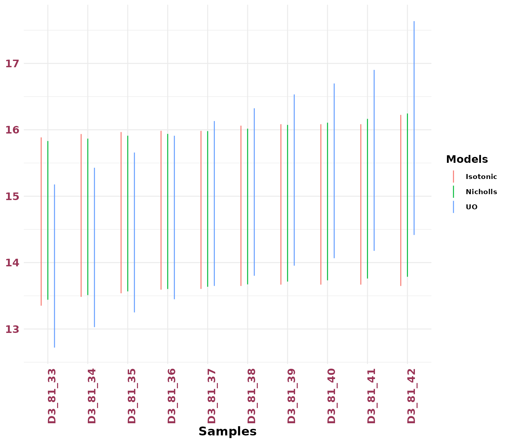

This Vignette introduces the tools in BayLumPlus that extend the original framework for age modelling.
library(BayLumPlus)
#> Loading required package: codaAge Model Function
Compute_AgeS_D computes only the model age and follows
the same configuration as AgeS_Computation.
The only difference lies in the DATA parameter, which
refers to a list of data inputs:
- Equivalent Doses:
- Dose rate:
- Standard Error for :
Note that several prior distributions can be tested:
-
Under strict order:
- Nicholls
- Approached Jeffreys:
- Conditional (using successive conditional processing)
- StrictOrder (using Uniform Order, UO)
- BayLum (the current BayLum implementation on CRAN)
-
Without order:
- Independence
You can use the extract_Jags_model() function to check
the list of all available models and data structures in
BayLumPlus.
To illustrate usage, the following code snippet uses the OSL dataset
from Jingbian, China
(see the package documentation for more details).
data("OSLJingbian")
names(OSLJingbian)
#> [1] "D" "sD" "ddot" "ThetaMatrix" "Nb_Sample"
#> [6] "SampleNames" "Output"To avoid redundancy, we have already computed the equivalent dose
model for these samples,
as our main objective here is to illustrate the age modeling
framework.
We can directly use the output of our unconstrained model, stored in
Output, with the following line:
We use the Independence prior since we require an unconstrained Bayesian model.
To visualize the posterior marginals, we use the
plot_Ages() function with the "density"
mode:
DoseDataset = plot_Ages(OSLJingbian$Output, plot_mode = "density")
Isotonic Regression Computation
The functions CurveIsotonic() and
PlotIsotonicCurve() compute the isotonic distortion of a
posterior distribution obtained from the Compute_AgeS_D()
function.
The currently supported prior for this isotonic correction is the Independence prior.
These functions require the following arguments:
StratiConstraints: The stratigraphic constraint matrix. This can either be provided directly or loaded from a file.
If no matrix is supplied, the model assumes a strict chronological order.Object: The output object returned by the age model functionCompute_AgeS_D().level: Confidence level for High Posterior Density (HPD) regions. The default is0.95.interactive: An optional argument. If not provided, the program will decide whether to display an interactive
Directed Acyclic Graph (DAG) visualization in a web browser.
JingbIso = PlotIsotonicCurve(StratiConstraints = c(), object = OSLJingbian$Output, level = .68)

The return value is a data frame containing information about the distorted posterior distribution, including:
- High Posterior Density (HPD) regions
- Mean Bayesian estimates
- Standard deviation estimates
In addition to the data frame, the function also generates a visualization that displays:
- The stratigraphic constraints as a Directed Acyclic Graph
(DAG)
- A ribbon plot showing the HPD regions of the distorted posterior distribution
Several optimization approaches are available, depending on the structure of the constraints:
-
PAVA (Pool Adjacent Violators Algorithm) for strict
chronological order
-
Sequential Block Merging (SBM) algorithm
-
Global convex optimization using the
CVXRpackage
HPD Regions Plotting
We can compare multiple priors using the plotHpd()
function. This function requires two main arguments:
-
listObject: A list of output objects returned byCompute_AgeS_D()using different prior settings.
-
Names: A character vector specifying the names for each age computation method, used to distinguish them in the plot.
